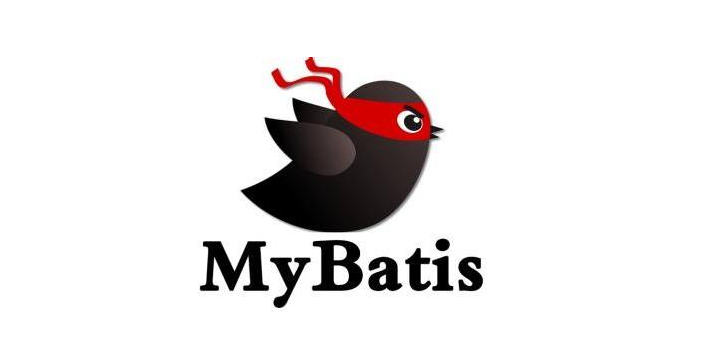
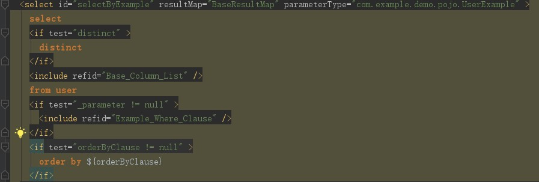
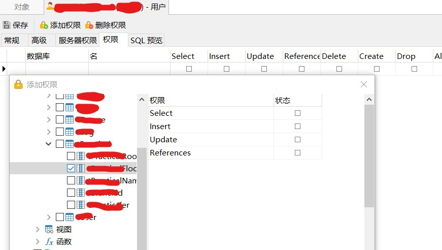

MyBatis维护较为简单，入门也比较简单，网上的学习资料丰富，Mybatis也是一直保持更新状态。可以说是现在市场上最流行的框架之一了。它支持自定义 SQL、存储过程以及高级映射。MyBatis 免除了几乎所有的 JDBC 代码以及设置参数和获取结果集的工作。MyBatis 可以通过简单的 XML 或注解来配置和映射原始类型、接口和 Java POJO为数据库中的记录。

我们在编写 SQL 语句时，难免会使用动态查询的方法，mybatis提供了两种方式 #{} 和 ${} 。
- #{value,jdbcType=类型} 在预处理时，会把参数部分用一个占位符 ? 替代，其中 value 表示接受输入参数的名称。能有效解决 SQL 注入问题
- ${} 表示使用拼接字符串，将接受到参数的内容不加任何修饰符拼接在SQL语句后面，使用${}拼接SQL，如果预防不当可能会引起 SQL 注入问题。
MyBatis 的防注入主要预编译。当用#{}的时候先用占位符?替代，会在变量前后加上"",再传入到sql语句里面。
Mybatis使用#{}
1 | 2020-07-01 20:15:34.090 DEBUG 5283 --- [nio-8080-exec-3] c.e.l.m.PracticalMapper.selectFloor : |
1 | select Practical from Practical where PracticalFloor = "32" |
但是如果用到了order by等关键字-来根据字段值进行排序时候，就会用到${}是拼接sql字符实现没有预编译的查询。
Mybatis注入有可能产生的地方
无法使用预编译的语句的地方
order by
使用order by，按照字段名进行排序。如果有多种排序机制，也就是意味着这个order by后面的参数是个变量。

当变量不被""包裹，直接进行拼接后(参与sql编译)就容易造成sql注入。
(尽可能要使用#{}，就算不能用也一定要做好过滤)
如何防止Mybatis注入
最常见的过滤
- 对传入参数进行and、or、select、from等重要关键字进行过滤
- 对传入参数进行重要表名，以及一些列名的过滤
- 对传入参数进行类型、长度、格式、范围等校验
1 | if(!"传入字符".equals("过滤字符")) |
- 对特殊字符进行转义如：
\、%、(、)、*、%等
对单用户进行限制
- 对用户账号使用的表进行分权(比如禁用insert,或者对别个表没有select权限)

在xml文件中处理
1 | <if test="username != null and username.indexOf(';')==-1 and username gt 30'" > |
sql语句来处理
1 | mysql: select user_id from User where user_name like concat('%',${user_name},'%') |
利用其他已经写好的轮子
- Mybatis-Plus、tk.mybatis等